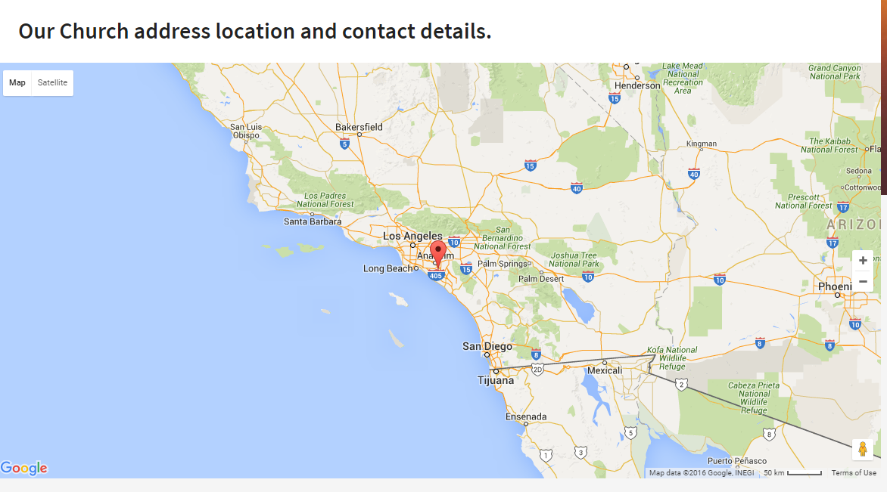

Map¶
Source¶
Sass styles are in folder
template_src/src/assets/sass/widgets/map.sass .Js source are in
template_src/src/js/module/map.js .Initialize map¶
// .js-map-canvas - container map's
// @param2 - coordinates, address
app.initMap('.js-map-canvas', {
latitude: "33.74229160384012",
longitude: "-117.86845207214355",
address: "Doolittle Ave 17A, Mayflower Village, Los Angeles, CA, USA, 90185"
});
Map html structure¶
<div class="map map--event">
<div class="map__buttons">
<button type="button" class="map__change-map js-map-btn active">Property Map</button>
</div>
<div class="map__wrap">
<div class="map__view js-map-canvas"></div>
</div>
</div>